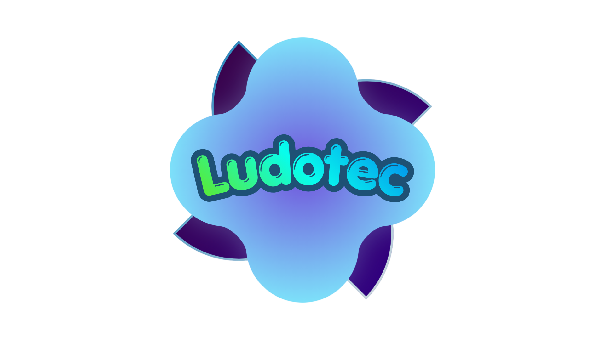
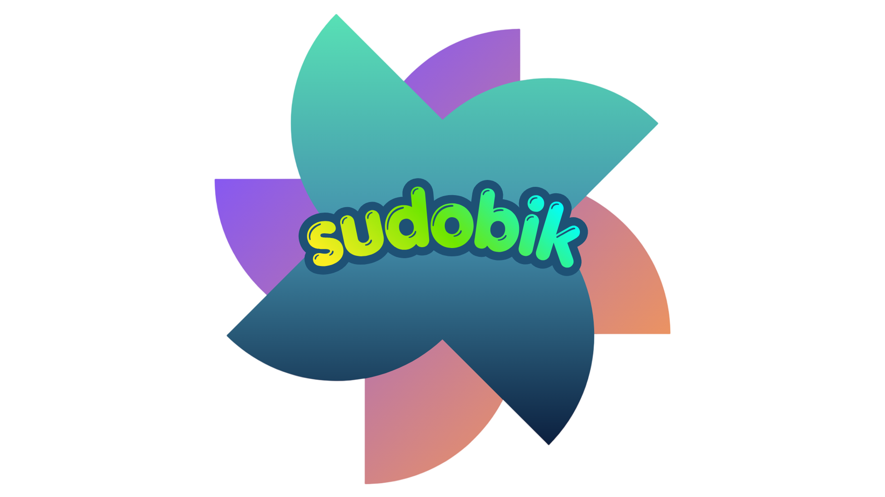

LudoTecUn recurso lúdico-tecnológico con 9 botones y 5 juegos diseñado para desarrollar memoria, atención y habilidades lógico-matemáticas en niños de 7 a 11 años, basado en la teoría de Jean Piaget.

Sudobik es un tablero interactivo de 9 botones (3x3) que combina la lógica de los números con dinámicas de juego. Cada botón representa un número del 1 al 9. A través de 5 juegos (Memoria, Suma, Resta, Multiplicación y División), los niños ejercitan su capacidad de retención, atención sostenida y razonamiento matemático.
Número seleccionado: -
El niño debe recordar la secuencia de números que se iluminan y repetirla. Entrena la memoria a corto plazo y la atención.
Se presentan dos números y el niño debe sumarlos mentalmente y presionar el resultado correcto en el tablero.
Ejercicios de resta con números del 1 al 9, fomentando el cálculo mental y la agilidad.
Tablas de multiplicar básicas. El niño selecciona el producto correcto entre las opciones del tablero.
Divisiones exactas con números pequeños, reforzando la relación entre multiplicación y división.
Según Jean Piaget, en esta etapa los niños desarrollan la capacidad de realizar operaciones lógicas cuando están vinculadas a objetos concretos. Sudobik ofrece precisamente eso: un tablero tangible con el que los niños pueden manipular números, experimentar y construir su pensamiento matemático a través del juego.
“El juego es el trabajo del niño.” — Jean Piaget
Los juegos de memoria y secuencias fortalecen la retención y la concentración.
Las operaciones matemáticas se integran en un contexto lúdico que motiva el pensamiento crítico.
Los juegos pueden realizarse en grupo, fomentando la discusión y el trabajo en equipo.
La app asociada ofrece informes de progreso y sugerencias de intervención.
Déjanos tus datos y te enviaremos una muestra digital y toda la información.